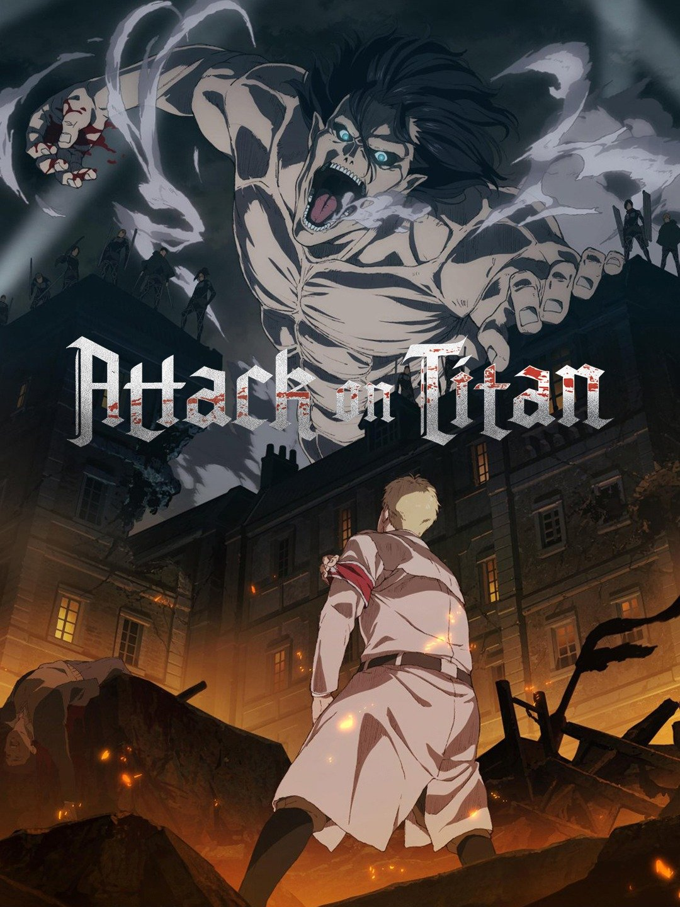

Naruto
.jpg)
-
Naruto Uzumaki, is a loud, hyperactive, adolescent ninja who constantly searches for approval and recognition on his journey to becoming Hokage in his village.
One piece

-
Monkey D. Luffy wants to become the King of all pirates.
Along his quest he meets:
Roronoa Zoro a skilled swordsman , Nami, a greedy thief who has a knack for navigation; Usopp, a great liar who has an affinity for inventing; Sanji, a warrior cook; Chopper, a sentient deer who is also a skilled physician; and Robin, former member of Baroque Works.
The gang sets sail to unknown seas in Grand Line to find the treasure of One Piece.
Attack on titan
-
When man-eating Titans first appeared 100 years ago, humans found safety behind massive walls that stopped the giants in their tracks. But the safety they have had for so long is threatened when a colossal Titan smashes through the barriers, causing a flood of the giants into what had been the humans' safe zone. During the carnage that follows, soldier Eren Jaeger sees one of the creatures devour his mother, which leads him to vow that he will kill every Titan. He enlists some friends who survived to help him, and that group is humanity's last hope for avoiding extinction at the hands of the monsters.
Hunter X Hunter

-
Hunter x Hunter follows the story of Gon Freecss, a 12-year-old kid who aspires to be a legendary hunter just like his father Ging Freecss who abandoned him in his infant years. Gon goes on a journey to become a hunter and to find Ging while he experiences several adventures along the way with his friends.
Full-Metal alcemist

-
the series follows the adventures of brothers Edward and Alphonse Elric, who are searching for the Philosopher's Stone so they can regain the bodies they lost in a failed attempt to bring their dead mother back to life.